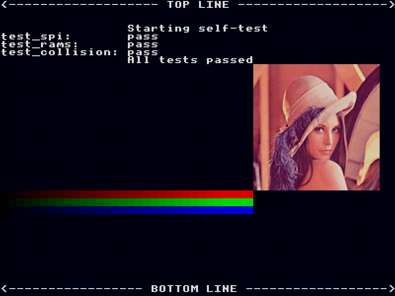
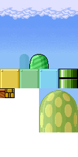

Gameduino for Artists¶
Like every other 8-bit game system, Gameduino has some restrictions on the graphics it can display. This page summarizes them for graphic artists and animators.
Screen and colors¶
Gameduino’s screen resolution is 400x300 pixels. Pixels are square. The screen refreshes at 72Hz, so natural rates for smooth animation are 72, 36, 24, 18 or 12 fps. Colors are 5 bits per channel, so these are the hex RGB values of the available colors:
00 *
08
10
18
20 *
28
30
38
40 *
48
50
58
60 *
68
70
78
80 *
88
90
98
a0 *
a8
b0
b8
c0 *
c8
d0
d8
e0 *
e8
f0
f8
The display output is only 3-bit (the hardware uses a 2x2 dither for the intermediate colors), so only the values marked with an asterisk are pure, undithered colors. Check out the color ramps and photograph in this image for an idea of what the dithering looks like:
{kind=link}
Background graphics¶
Background graphics are character based. The hardware supports 256 characters on screen at any time. Each character is 8x8 pixels, and each character can use up to four different colors. To be clear: there are 256 characters available, and each has its own 4-entry palette. The screen resolution is 400x300 pixels, or 50x37.5 characters.
This is the entire background set for the scroll demo. The scroll program creates each of the background elements by copying rectangular pieces of this source image to the screen.
Foreground graphics¶
The foreground (sprite) system has a few modes. Individual sprites are 16x16 pixels. Larger sprites are made by combining these 16x16 sprites.
Sprite images are paletted: there are three palette modes: 256 color, 16 color and 4 color. Transparent pixels count as one color in the palette, so a sprite with transparency can use 255, 15 or 3 non-transparent colors.
The storage required for sprite images depends on the number of colors used. The hardware has room for 64 256-color sprites, 128 16-color sprites, or 256-4 color sprites, or any combination of these.
The palettes available depend on the color mode. There are four 256-color palettes, and two each of the 16 and 4 color palettes. A paricular on-screen sprite can use any image, and any palette.
To save on sprite images, the hardware supports an 8-way flip/rotate of the sprite image (see rotate for an example).
Last modified $Date: 2011-05-13 11:32:42 -0700 (Fri, 13 May 2011) $